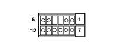

M070B CLIMATE CONTROL SYSTEM CONTROL UNIT (AIR CONDITIONING)
- Path
- Electrical equipment > 3 CONNECTORS > M INTERMITTENT AND TIMED ELECTRONIC DEVICES > M070 CLIMATE CONTROL SYSTEM CONTROL UNIT > M070B CLIMATE CONTROL SYSTEM CONTROL UNIT (AIR CONDITIONING)
- Kind
- connector pinout (pin -> wire colour -> other end)
- Applies to
- all engines; all production periods; only with equipment: Automatic Air Conditioning
- Interactive page
- https://sloeber94.github.io/elrnDB-fPnd/en/#/169003457
Applies to: all engines; all production periods; only with equipment: Automatic Air Conditioning

Wiring | Colour |
|---|---|
MARRONE (brown) |
Pin | Cable | Destination | |||
|---|---|---|---|---|---|
Sec.. | Colour | Node | Connect. | Pin | |
1 | 0,5 | R (red) | 1 | ||
2 | 0,5 | GR (yellow with red stripe) | 4 | ||
3 | 0,5 | N (black) | 2 | ||
5 | 0,35 | NZ (black with violet stripe) | X | 1 | |
1 | |||||
1 | |||||
1 | |||||
1 | |||||
6 | 0,35 | AG (light blue with yellow stripe) | 2 | ||
7 | 0,35 | MB (brown with white stripe) | 1 | ||
8 | 0,35 | AV (light blue with green stripe) | 2 | ||
9 | 0,35 | NS (black with pink stripe) | 3 | ||
10 | 0,35 | BS (white with pink stripe) | 2 | ||
11 | 0,5 | L (blue) | 2 | ||
12 | 0,5 | G (yellow) | 2 | ||
Topics linked from this page (9)
- 65 AIR CONDITIONING
- D008 AIR CONDITIONING-HEATER FRONT COUPLING
- D021 DASHBOARD/AIR CONDITIONING-HEATER COUPLING
- K086 FROST SENSOR
- K087 LOWER MIXED AIR TEMPERATURE SENSOR
- K088 UPPER MIXED AIR TEMPERATURE SENSOR
- N080 AIR DISTRIBUTION FLAP ACTUATOR
- N081 MIXTURE FLAP ACTUATOR
- N085 PASSENGER COMPARTMENT AIR FAN
Topics that link to this page (8)
- D008 AIR CONDITIONING-HEATER FRONT COUPLING (AIR CONDITIONING)
- D021 DASHBOARD/AIR CONDITIONING-HEATER COUPLING (AIR CONDITIONING)
- K086 FROST SENSOR (AIR CONDITIONING)
- K087 LOWER MIXED AIR TEMPERATURE SENSOR (AIR CONDITIONING)
- K088 UPPER MIXED AIR TEMPERATURE SENSOR (AIR CONDITIONING)
- N080 AIR DISTRIBUTION FLAP ACTUATOR (AIR CONDITIONING)
- N081 MIXTURE FLAP ACTUATOR (AIR CONDITIONING)
- N085 PASSENGER COMPARTMENT AIR FAN (AIR CONDITIONING)